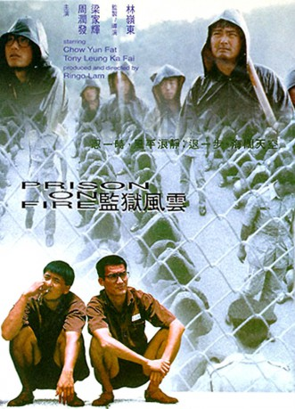

#3489 Prison on Fire
 
 IMDB-Wertung: 7.4 / 10
IMDB-Wertung: 7.4 / 10  Metascore: 0
Metascore: 0 
Lo Ka Yiu (Tony Leung), der mit seinem Vater ein Lebensmittelgeschäft in Hongkong führt muß ins Gefängnis wegen eines unbeabsichtigt verschuldeten Tod eines Ladendiebes. Yiu ist sehr sensibel und findet sich in dem Gefängnis überhaupt nicht zurecht, sondern möchte am liebsten zu seiner Freundin zurück. Er wird von den verschiedenen Triaden innerhalb des Gefängnisses als leichtes Opfer gesehen und dauernd verprügelt und mißhandelt. Es kommt schon so weit, daß er einen glücklicherweise mißglückten Selbstmordversuch begeht. Doch nachdem er sich mit Ah Ching (Chow Yun-Fat) anfreundet gibt es immer mehr Leute die zu ihm halten. Letztendlich gibt es noch 2 Feinde im Gefängnis: Der sadistische Oberaufseher und ein Triaden-Boß.
Jahr: 1987
Dauer: 101 Minuten
FSK: 16
Land: Hong-Kong Studio: e-m-s the DVD-CompanyTonspuren: DD5.1 - ,
Untertitel: Englisch,
Auflösung: 1080p (1920x1080) Größe: 9216 MB
Genre: Action, Thriller, Drama, Krimi
Regisseur:  Ringo Lam
Ringo Lam
Drehbuch: Phyllis Nagy
Soundtrack:
Darsteller:
 Yun-Fat Chow als 41671 / Chung Tin Ching
Yun-Fat Chow als 41671 / Chung Tin Ching Tony Ka Fai Leung als Lo Ka Yiu / 51910
Tony Ka Fai Leung als Lo Ka Yiu / 51910- Ka-Kui Ho als Micky
 Roy Cheung als Officer 'Scarface' Hung
Roy Cheung als Officer 'Scarface' Hung- Victor Hon als Chiu Chow Man
- Frankie Chi-Hung Ng als Blind Snake
- Kwong Leung Wong als Bill
- Man-Gwan Wong als Mimi
- Joe Chu als Billy
 Fui-On Shing als Madly
Fui-On Shing als Madly- Ming Leung als Yiu's Father
- Shui-Jan Fung als Ching's Mother
- Yuen-Tat Chan als Kau Suk
- Shu-Kei Law als Prison Warden
- Yin Nam als Prisoner's Head
- Shui-Chiu Gan als Police Inspector
- Kwong-Tim Lee als Prisoner
- Wai Man Tam als Prisoner
 Foo-Wai Lam als Extra
Foo-Wai Lam als Extra- Shui-Wah Fok als Extra
- Kwok-Kin Ng als Extra
- Ying-Ying Tang als Extra
- Shih Wu als Extra
Datei: X:\HD-Eastern-Modern(N-Z)\Prison on Fire (1987, FSK16, 1920x1080).mkv seit 14.04.2016
Festplatte: HD Eastern+Western
 Es gibt insgesamt 76 Filme in der Gruppe 'HD-Eastern-Modern(N-Z)'
Es gibt insgesamt 76 Filme in der Gruppe 'HD-Eastern-Modern(N-Z)'